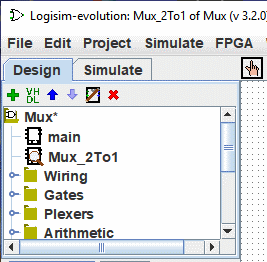
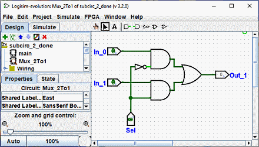

创建电路
每个 Logisim 项目实际上都是一个电路库。最简单的形式下，每个项目只有一个电路（默认名为 main），但很容易添加更多：单击导航面板上方 小菜单栏 上的 ，或 右键单击 导航面板中树的根节点，或选择 | 项目 |→| 添加电路... |，然后为要创建的新电路输入任意名称。
注意： 电路名称必须以字母（A..Z、a..z）开头，可包含符号（.、_）和数字。
假设我们要构建一个名为 Mux_2to1 的 2 选 1 多路选择器。添加电路后，Logisim 将如下所示。

在资源管理器窗格中，您现在可以看到项目包含两个电路：main 和 Mux_2to1。Logisim 在当前正在查看的电路图标上绘制一个放大镜；当前电路名称也显示在窗口标题栏中。
将电路编辑成类似 Mux_2to1 的样子后，我们最终可能得到如下电路。

下一节： 使用子电路。